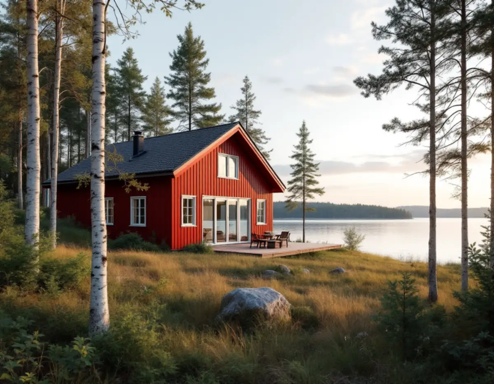
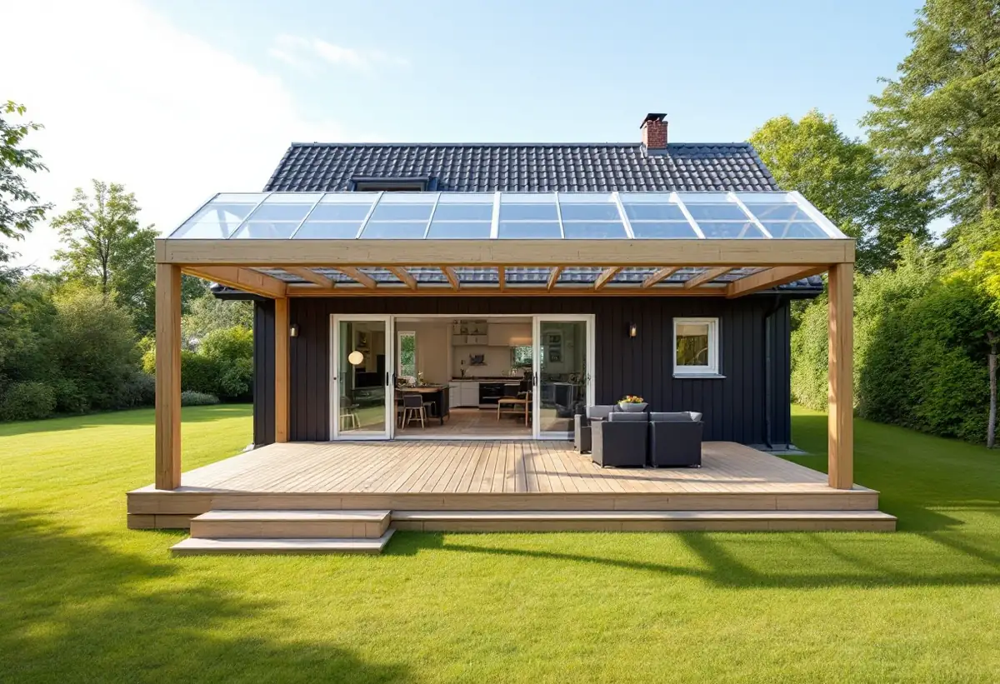
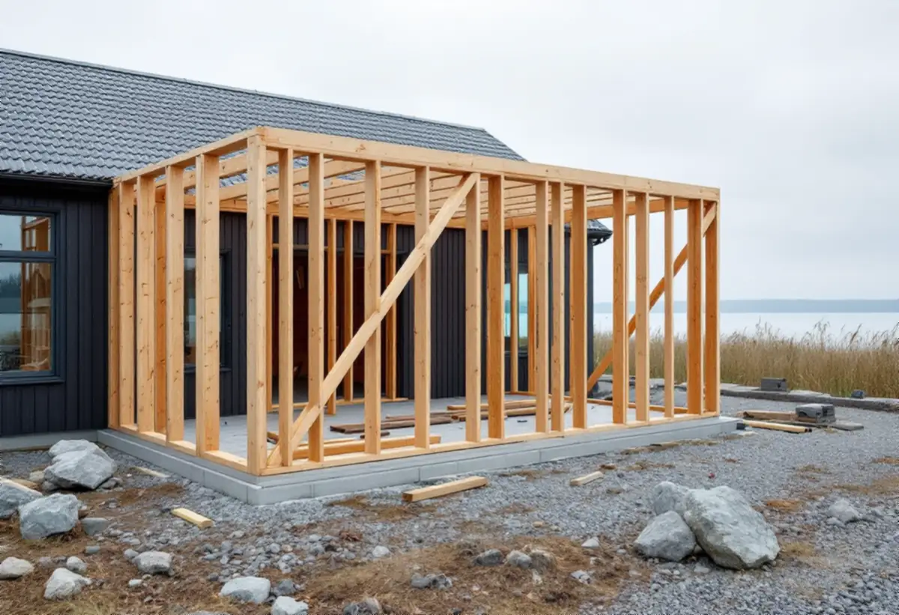

Ekerökartan
Särskilt värdefulla områden, totalförsvaret och detaljplanens skyddsbestämmelser.
Ekerö kommun gjorde en ny bedömning av sina särskilt värdefulla byggnader och områden när de nya byggreglerna kom. Det betyder att en tillbyggnad som är lovfri på en ö kan kräva bygglov på nästa. Geal Entreprenad AB bygger till villor och fritidshus på Mälaröarna och börjar med kartan.

När plan- och bygglagen ändrades gjorde kommunen en ny bedömning av sina särskilt värdefulla byggnader och områden. De finns nu i Ekerökartan tillsammans med totalförsvarets riksintressen, och kommunen ber dig börja med att kontrollera om din fastighet berörs. Inom de särskilt värdefulla områdena går det inte att använda de nya lovfria reglerna.
Kommunen nämner två undantag till. Ska tillbyggnaden närmare gränsen än 4,5 meter krävs grannarnas skriftliga medgivande, annars bygglov. Och lovfria åtgärder får inte strida mot skyddsbestämmelser i detaljplanen om markförorening, olyckor, översvämning och erosion. Vi läser kartan och planen för din fastighet innan vi föreslår en lösning.

En tillbyggnad av ett hus som inte är en komplementbyggnad får vara högst 30 kvadratmeter bruttoarea eller öppenarea tillsammans med tidigare lovfria tillbyggnader, och den får inte gå över husets taknock. Ekerö kommun påpekar att skärmtak nu räknas in i den potten. Ett skärmtak över uteplatsen och ett uterum delar alltså på samma 30 kvadratmeter.
Altaner lägre än 1,2 meter kräver inget bygglov, och utanför detaljplanelagt område krävs inget bygglov för altan alls. Men kommunen skriver att en altan behöver bygglov om du bygger in den, till exempel med inglasning, eller om du bygger ett rum under den. Det gäller både fristående altaner och altaner som byggs ihop med huset. Vill du glasa in en befintlig altan räknar vi därför på den som en tillbyggnad.
En regel som ofta glöms: om du bygger ett komplementbostadshus, inreder ytterligare en bostad eller ändrar boarean i ditt bostadshus ska du meddela kommunen när bostaden står klar, oavsett vad de nya byggreglerna säger. Kommunen behöver uppgiften för att uppdatera lägenhetsregistret. En tillbyggnad som blir ett nytt sovrum eller ett större vardagsrum ändrar boarean.
Tillbyggnader av befintliga komplementbyggnader har egna mått: högst 30 kvadratmeter byggnadsarea inom detaljplan och 50 utanför, högst 4 meter i nock inom plan och 4,5 utanför, mindre än huvudbyggnaden och inom tomtens sammanlagda 45 respektive 65 kvadratmeter. Om nya fristående hus på tomten kan du läsa under attefallshus på Ekerö.
Många tomter på Ekerö ligger nära vatten. Kommunen ber dig sätta dig in i reglerna om strandskydd innan du bygger i närheten av vatten. Vi mäter in avståndet till strandlinjen tidigt, eftersom placeringen kan avgöra om en dispens behövs.
Får tillbyggnaden badrum eller kök gäller två saker. Ska den anslutas till kommunalt vatten och avlopp skickar du en anmälan till Roslagsvatten i god tid före byggstart. Har fastigheten eget avlopp och tillbyggnaden ger mer avloppsvatten kan du behöva söka tillstånd eller anmäla ändringen av den enskilda avloppsanläggningen. Om större byggprojekt på öarna kan du läsa under byggföretag på Ekerö.

Särskilt värdefulla områden, totalförsvaret och detaljplanens skyddsbestämmelser.
Tidigare skärmtak och tillbyggnader mäts in och avståndet till vatten kontrolleras.
Tillbyggnaden ritas efter huset och tomten.
Bygglov, frivilligt lov eller anmälan för installationer.
Grund, stomme, tak och anslutningen mot huset.
Ändrad boarea meddelas kommunen för lägenhetsregistret.
Rotavdraget är högst 30 procent av arbetskostnaden, högst 50 000 kronor per person och år och högst 75 000 kronor tillsammans med rutavdrag. Material och resor ger inget avdrag.
Skatteverket godkänner en tillbyggnad av ett småhus om någon av tillbyggnadens sidor sitter ihop med husets yttervägg till minst 75 procent, eller om det finns en dörr emellan. Bostaden ska vara äldre än fem år och större delen av den ursprungliga stommen ska behållas. Bygglovshandlingar och arkitekt ger inget avdrag. Geal drar avdraget direkt på fakturan där det gäller.
Tillbyggnadens storlek, grund på berg, lera eller i sluttning, om badrum och avlopp ska in, hur material kan köras fram och om bygglov behövs. Efter ett gratis platsbesök får du ett skriftligt kostnadsförslag.
Mer boyta i samma hus.
Tillbyggnad →Takbyte, takbesiktning och plåtarbeten.
Takläggare på Ekerö →Stenhamra, Kungshatt och Adelsö.
Takrenovering på Ekerö →Utanför plan, strandskydd och eget avlopp.
Attefallshus på Ekerö →Anmälan, mjukt vatten och eget avlopp.
Badrumsrenovering på Ekerö →Nytt hus, vattenskydd och bergvärme.
Byggföretag på Ekerö →Väder, säsong och torktider på öarna.
Fasadmålning på Ekerö →Egnahem, villaområden och äldre gårdar på Ekerö.
Fasadrenovering på Ekerö →Sommarvillor och 60-talsvillor på Ekerö.
Fönsterbyte på Ekerö →Erskines centrum och villorna.
Fönsterrenovering på Ekerö →Villor i Stenhamra och omgjorda sommarhus.
Golvläggare på Ekerö →Slipa trägolv som ligger på golvvärme.
Golvslipning på Ekerö →Vedspis, egen brunn och nya sopsorteringen.
Köksrenovering på Ekerö →Sommarvillor, stugor och villor på Mälaröarna.
Målare på Ekerö →Takvatten, solceller och plåttak på Ekerö.
Plåtslagare på Ekerö →Altan, gäststuga och snickeri nära Mälaren.
Snickare på Ekerö →Kartan, solcellerna och skorstenen.
Takbyte på Ekerö →Tapet på timmer, papp och skivor.
Tapetsering på Ekerö →Braskamin och större fönster.
Totalrenovering på Ekerö →